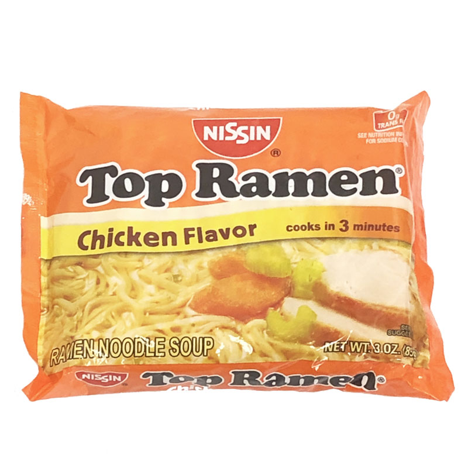

Plain Pasta Recipie

Ingrediants
- 2 cups water
- 1 (3 ounce) package instant ramen noodles (exclude seasoning packet)
- 2 tablespoons garlic powder
- 2 tablespoons onion powder
- 2 tablespoons ground ginger
- salt and ground black pepper to taste
Steps
- Bring 2 cups water to a boil in a saucepan
- Cook noodles in boiling water until tender, about 3 minutes
- Stir garlic powder, onion powder, and ginger into the noodles and water
- Season with salt and black pepper
Return